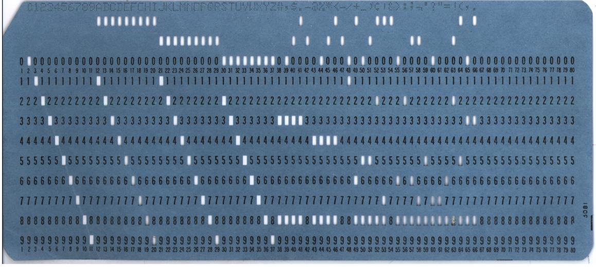

Prima del programma in memoria
Le prime macchine automatiche ricevevano dati o istruzioni attraverso supporti e configurazioni esterne: schede e nastri perforati, pannelli di collegamento, cavi, interruttori o parti meccaniche.
Cambiare lavoro poteva significare preparare un nuovo mazzo di schede oppure riconfigurare fisicamente la macchina. Il confine tra “programma” e “configurazione dell'hardware” era quindi molto più visibile di oggi.
Precisazione: una scheda perforata poteva contenere istruzioni, dati o informazioni di controllo. Non tutte le schede perforate erano programmi.

L'idea decisiva
In un computer a programma memorizzato, le istruzioni sono codificate come sequenze di bit e conservate in memoria. Nella stessa memoria si trovano anche i dati sui quali le istruzioni operano.
Una sola memoria
Programmi e dati occupano celle indirizzabili e possono essere trasferiti verso il processore.
Comportamento modificabile
Per cambiare compito si carica un altro programma, senza ricostruire la macchina.
Istruzioni come dati
Un programma può essere copiato, salvato, trasmesso e prodotto da un altro programma.
Programmare significa fornire alla macchina una rappresentazione delle operazioni da eseguire. L'hardware rimane generale; è il programma caricato a specializzarne temporaneamente il comportamento.
Un esempio concettuale
Supponiamo che alcune celle di memoria contengano dati e altre contengano istruzioni:
| Indirizzo | Contenuto simbolico | Interpretazione |
|---|---|---|
100 | LOAD 200 | Carica nel processore il valore conservato all'indirizzo 200. |
101 | ADD 201 | Somma il valore conservato all'indirizzo 201. |
102 | STORE 202 | Salva il risultato all'indirizzo 202. |
200 | 7 | Primo dato. |
201 | 5 | Secondo dato. |
202 | ? | Cella destinata al risultato, che diventerà 12. |
La distinzione tra istruzione e dato dipende da come il processore usa quei bit e dall'indirizzo dal quale li preleva.
Conseguenze pratiche
- caricare e sostituire rapidamente programmi;
- usare salti e cicli per cambiare il flusso di esecuzione;
- costruire compilatori, sistemi operativi e librerie;
- salvare e distribuire il software come informazione.
Nuove responsabilità
- proteggere memoria e programmi da modifiche indesiderate;
- distinguere aree eseguibili e aree destinate ai dati;
- controllare chi può caricare o avviare un programma;
- verificare integrità e provenienza del software.
Dalla teoria alla realizzazione
La macchina universale di Turing aveva mostrato sul piano teorico che descrizione della macchina e dati potevano essere codificati insieme. Negli anni Quaranta questa intuizione entrò nei progetti di calcolatori elettronici a programma memorizzato.
Il rapporto sull'EDVAC diffuso nel 1945 con il nome di John von Neumann descrisse in modo influente l'organizzazione di una macchina di questo tipo. La realizzazione pratica fu il risultato del lavoro collettivo di matematici, ingegneri e tecnici, tra cui John Mauchly, J. Presper Eckert e il gruppo dell'EDVAC.
Attenzione alle semplificazioni storiche: “macchina di von Neumann” è un nome convenzionale molto utile, ma non significa che l'idea e i primi computer siano opera di una sola persona.